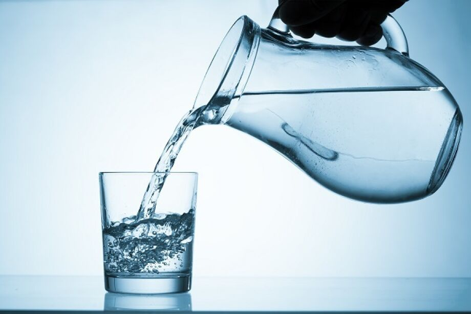

Como beber água para continuar vivo
Primeiramente é necessário ter um copo para executar tal tarefa com maestria, sem sujeira e com elegancia

Como mostrado, este copo esta com água, o líquido que iremos ingerir.

Observado anteriormente mas com um certo conhecimento avançado, onde o copo ja estava com água, agora com os seguintes passos.
1. Coloque a ponta de uma jarra com o líquido na ponta
2. Despeje o líquido até a quantidade desejada e de acordo com os limites do tamanho do copo.
Agora teremos nosso desejado e sonhado copo de água, mas para ingeri-lo é só encostar a ponta do copo em sua boca, lembre-se de engolir para não transbordar sua região mastigadora